Edge를 실제 앱에 맞추고 4px 그리드를 끝까지 적용
2026-11-16 · 브랜치 feat/edge-consistency · 비교 기준: 지난 리포트(2026-11-01)의 마지막 커밋 8993b05 → 오늘 b6c1931. 15f69a7까지는 Draft PR #26에 올라가 있고, 0689e30부터 커밋 4개는 아직 push하지 않았다.
assets/2026-11-16-edge-real-app/compare/에 두었다.1. Simon이 확인할 것
- Setup의 남은 기능. 실제 앱의 모니터 밝기·각도·거리 모드와 줄무늬 굵기 Auto 찾기·AI 미세 조정은 11-03~11-13 사이 매일 바뀌어 이번 브랜치에서 뺐다. 실제 앱이 안정되면 새 브랜치에서 옮기는 것을 추천한다.
- CI 시각 기준선 승인. 4px 정리로 CI 스냅샷 대부분이 달라진다(4단계 기준 53개 중 34개). 남은 커밋 4개를 push한 뒤 CI 결과로 이 리포트와 같은 번호 박스 비교를 다시 보여 드리고, 승인받은 것만 기준 이미지로 올린다.
- 0.0.5도 함께 바뀐 것. 0.0.6이 0.0.5 스토리 코드를 다시 쓰고, 공용 컴포넌트(탭·메뉴·배지·테두리·줄 높이)가 바뀌어 0.0.5·Platform 화면도 1~4px씩 움직인다. 실제 앱 기능(언어 메뉴를 빼고)은 0.0.6에만 켰다.
- 2px 간격 허용. 2px는 "광학 보정(아이콘 위치, 포커스 간격)"에만 쓰는 것으로 DESIGN.md에 남겼다. 레이아웃 간격으로는 쓰지 않는다.
2. 커밋
| 시각 | 커밋 | 내용 |
|---|---|---|
| 11-02 20:00 | 3425eb2 | 상단바 언어 선택을 지구본 아이콘 메뉴로(실제 앱과 같게) |
| 11-02 20:19 | 898334f | 탭·메뉴 항목·배지·창 제목줄 버튼 높이를 4px에 |
| 11-02 20:42 | b315608 | 상단바에 카메라·PLC 상태 아이콘과 Auto inspect 버튼 |
| 11-02 22:17 | b7c7fe4 | 1px 테두리를 상자 안쪽에 그려 4px에 |
| 11-02 22:34 | d43e8e6 | 숫자 입력칸 증감 버튼·여러 줄 입력칸, 4px 적용 범위 문서화 |
| 11-08 15:42 | 5845d46 | 글자 줄 높이를 배수 대신 px 값으로 |
| 11-08 15:42 | 42d482b | 줄 높이 정리 뒤 4px 감사 결과 기록 |
| 11-08 18:10 | 28a9014 | 남은 테두리·두 줄 글자 간격·구분선, 설정 절 위험 색 구분선 버그 |
| 11-08 19:07 | e5f7f61 | 4px에서 벗어나면 Storybook 테스트 실패(검사 장치) |
| 11-09 01:00 | 15f69a7 | CI 실행 환경을 ubuntu-24.04로 고정 |
| 11-09 01:25 | 0689e30 | 설정에 PLC Communication · Judge model 탭(0.0.6) |
| 11-16 18:28 | 8b17214 | Statics 맨 위에 Live status(0.0.6) |
| 11-16 20:08 | 59230cf | Setup: 설정 찾기, Solid 노출, 줄무늬 대비 카드(0.0.6) |
| 11-16 20:32 | b6c1931 | 스토리 테스트용 문장·값을 화면에서 숨기고 재발 검사 |
3. 실제 앱과 비교해 찾은 차이
맥에서 실제 Edge 앱(ingradient-edge main, 데모 프로젝트, 목업 카메라)을 1920×1080으로 띄워 Capture·Images·Statics·Setup과 설정 13개 탭을 찍고, 같은 크기의 0.0.6 스토리와 비교했다. 실제 앱은 패널을 띄운 카드와 채워진 탭을 쓰지만 0.0.6은 이미 Platform과 같은 선으로 나눈 열과 밑줄 탭이라, 배치는 0.0.6을 유지하고 기능과 내용만 옮겼다.
| 차이 | 처리 |
|---|---|
| 언어 선택: 실제 앱은 지구본 아이콘 메뉴(3개 언어), 0.0.6은 스토리용 임시 드롭다운이 상단바 밖으로 넘침 | 4절. LangSelectorView 추가 |
| 상단바: 카메라·PLC 상태 아이콘, Auto inspect 버튼 없음 | 4절 |
| 설정: PLC Communication · Judge model 탭 없음(11개 → 13개) | 5절 |
| Statics: Live status(1시간/1일/1주) 없음 | 6절 |
| Setup: 설정 찾기, Solid 노출, 줄무늬 대비 카드 없음 · 실제 앱에서 사라진 Features/Analysis 토글이 남음 | 7절(모니터 모드·줄무늬 찾기는 남김) |
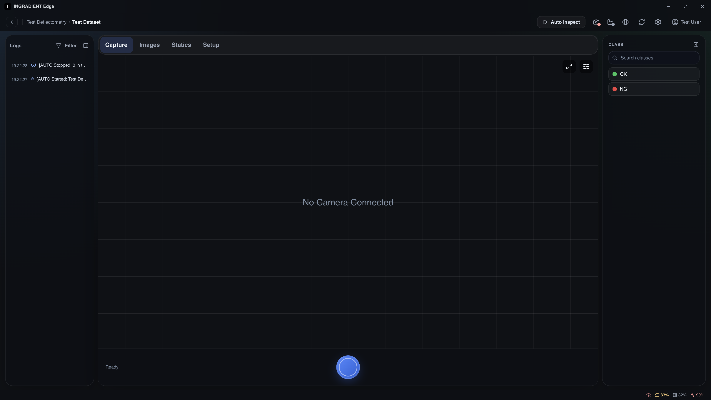
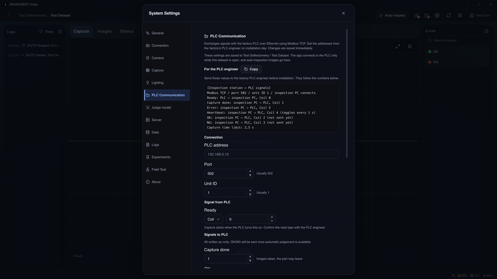
4. 상단바: 언어·상태 아이콘·Auto inspect
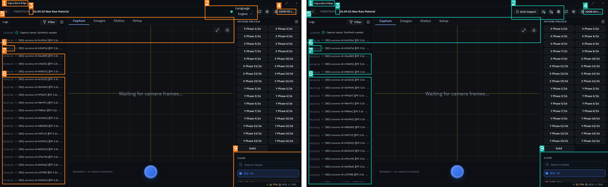
- 1창 제목줄: 아래 테두리를 안쪽 선으로 바꿔 창 버튼이 31 → 32px
- 2상단바 오른쪽: 스토리용 "Language / English" 드롭다운(48px 밖으로 넘침)과 상태 점 하나 → Auto inspect 버튼, 카메라·PLC 상태 아이콘(모서리 점), 지구본 언어 버튼
- 3경로 구분선 위치(4px 정리)
- 4계정 버튼 높이(4px 정리)
- 5뒤로 버튼: 화면 읽기 이름이 "Action" → "Back to datasets"
- 6밑줄 탭: 38 → 40px, 아래 선을 안쪽 선으로
- 7로그 시간 위치(줄 높이 px)
- 8로그 목록: 줄마다 높이가 1px 미만씩 달라 아래로 갈수록 어긋나던 것이 정확히 맞음
- 9오른쪽 패널 구분선(안쪽 선)
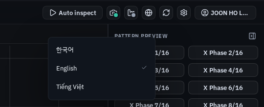
--ig-z-header)을 줬다.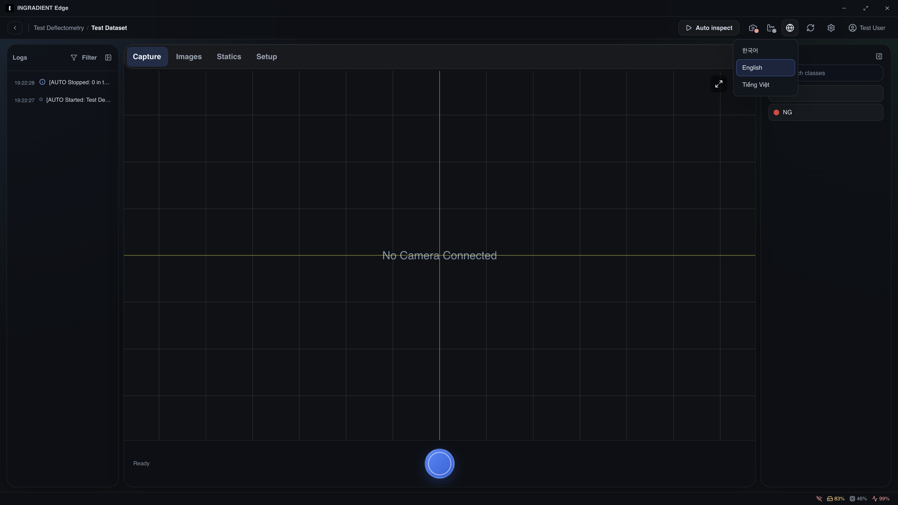
5. 설정: PLC Communication · Judge model
실제 앱의 두 탭을 0.0.6 설정에 넣었다(0.0.6 스토리에서만 켬). 상단바 PLC 아이콘을 누르면 PLC 탭이 열린다. 상태별 스토리: PLC 연결됨·응답 없음·데이터셋 없음·자동 검사 중(잠김)·주소 중복, Judge 로딩·실패·연결 불가·준비됨·프로젝트 없음.
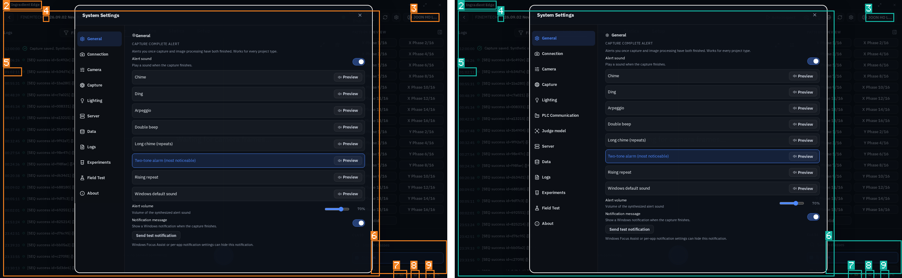
- 2창 제목줄(4px 정리)
- 3계정 버튼
- 4경로 구분선
- 5로그 시간
- 6설정 왼쪽 목록에 PLC Communication · Judge model 추가, 알림음 행 높이 4px
- 7하단 상태줄 아이콘
- 8하단 상태줄
- 9하단 상태줄
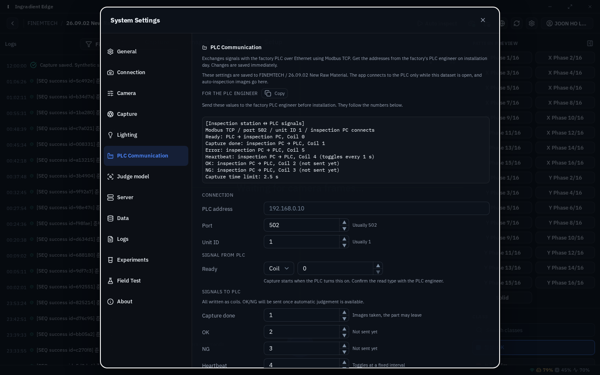
- 1PLC 엔지니어에게 보낼 값(Copy)
- 2연결: 주소·포트·Unit ID
- 3PLC가 보내는 신호(Ready)와 PLC로 보내는 신호(Capture done·OK·NG·Heartbeat)
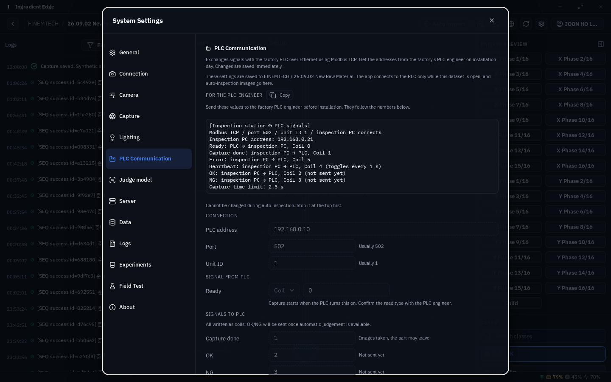
- 1"자동 검사 중에는 바꿀 수 없음" 안내와 비활성 입력칸
- 1모델 상태(설치 안 됨: 원본만 저장)
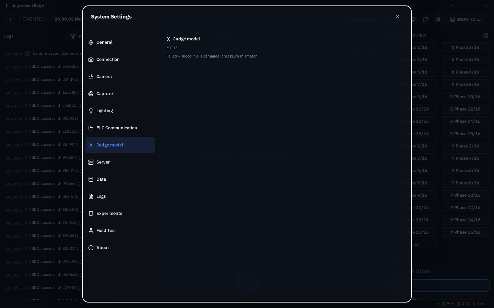
- 1실패 이유와 다시 시도
6. Statics: Live status
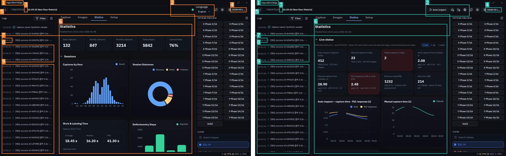
- 2상단바(4절)
- 6Statistics 제목줄 높이(줄 높이 px)
- 7로그 시간
- 8로그 목록
- 9로그 목록
- +가운데: 맨 위에 접을 수 있는 Live status가 생겼다 — 기간 전환(1시간/1일/1주), 카드 8개(오늘 자동·수동 촬영, 실패, 자동·수동 촬영 시간, PLC 응답 p95, 메모리, 남은 디스크), 그래프 3개. 실패가 있거나 PLC가 기준을 넘거나 디스크가 3일 미만이면 카드가 빨갛다. 그 아래 기존 요약 카드와 Sessions는 그대로.
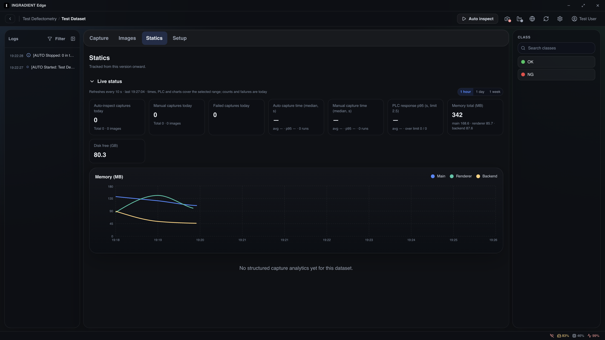
7. Setup: 설정 찾기 · Solid 노출 · 줄무늬 대비
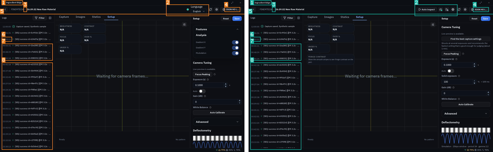
- 2상단바(4절)
- 6로그 목록
- 7로그 시간
- 8로그 목록
- +오른쪽 패널: 실제 앱에서 사라진 Features / Analysis 토글을 뺐다. Camera Tuning 아래에 Find the best capture settings 버튼과 설명, Exposure 아래에 Solid exposure (%) 칸과 실제 노출(ms).
- +미리보기 지표: 맨 아래에 넓은 Fringe contrast 카드. 줄무늬를 띄우지 않으면 안내만 보인다.
- +값을 바꾸고 저장하지 않으면 패널 위에 "저장 안 한 변경" 안내가 뜨고 설정 찾기가 막힌다(실제 앱과 같음).
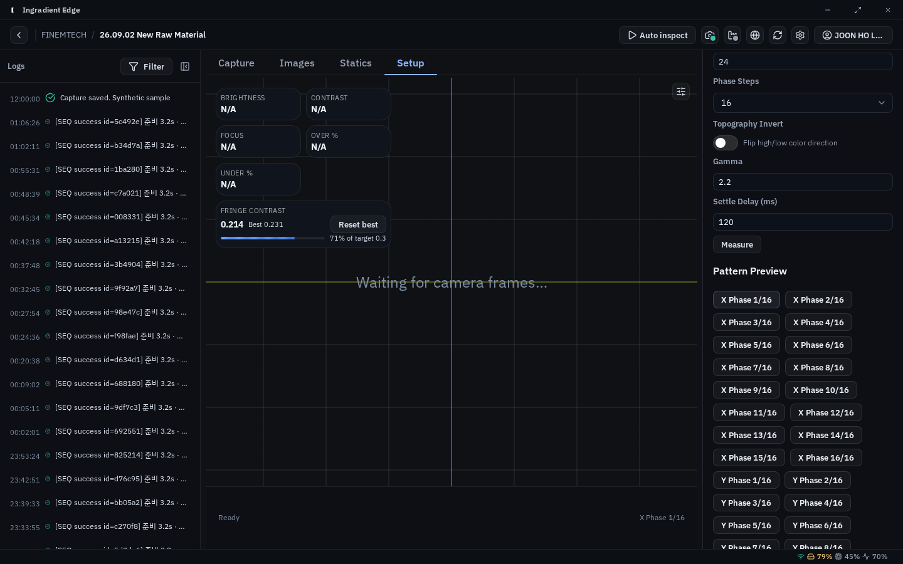
- 1Fringe contrast: 지금 값 0.214, 최고값 0.231과 Reset best, 학습 목표 0.3 대비 71% 게이지
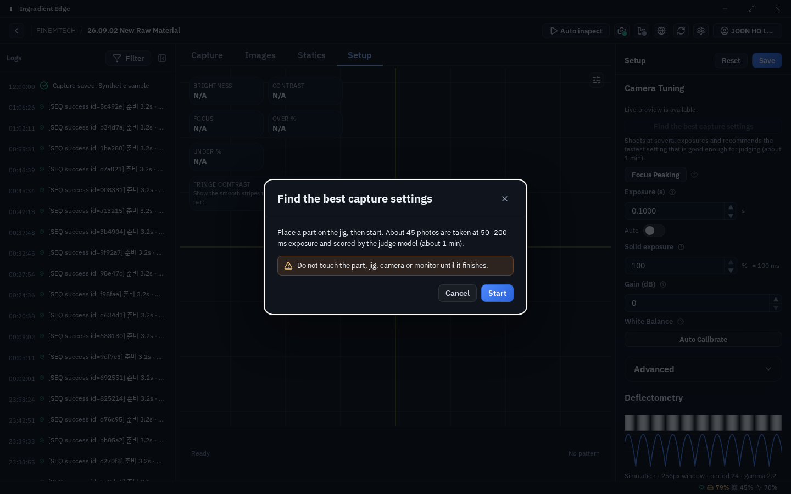
- 1부품을 지그에 두고 시작, "끝날 때까지 건드리지 말 것" 경고
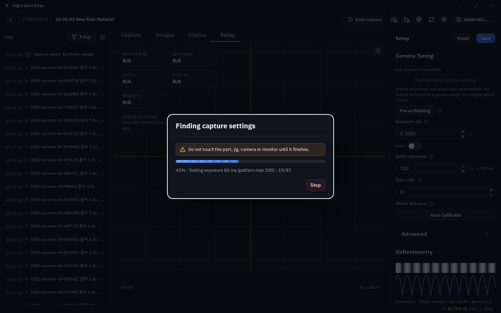
- 1닫기 버튼과 Escape 없이 Stop만. 진행률과 지금 시험하는 노출
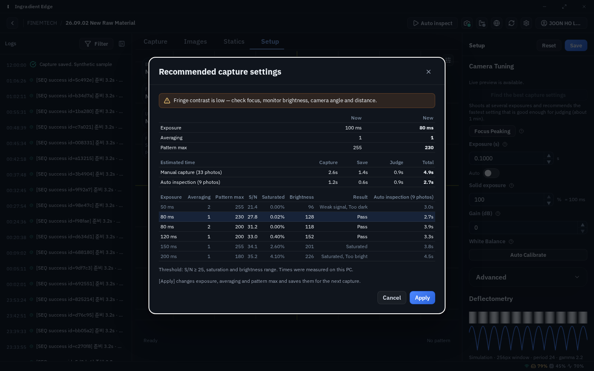
- 1경고(줄무늬 대비 낮음)
- 2지금 → 새 값(노출·평균 횟수·패턴 최대)
- 3수동·자동 예상 시간
- 4후보 표: 통과/실패 이유, 추천 행 강조. Apply로 적용·저장
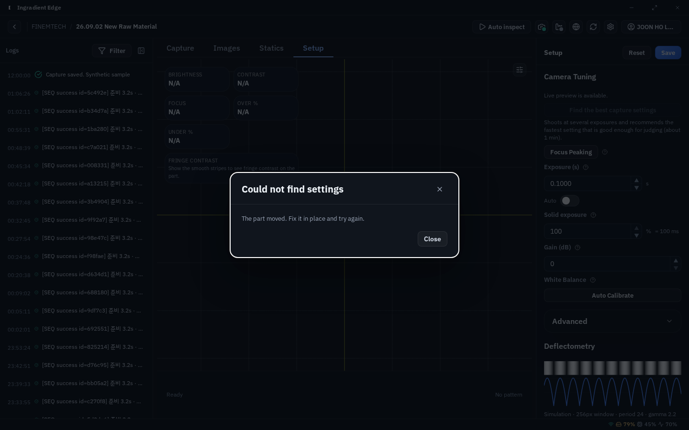
- 1실패 이유(부품이 움직임 등)
동작 시나리오: 수정 → 막힘 → 저장 → 시작 → Stop결과 적용
8. 4px 그리드: Edge
토큰 값이 아니라 실제로 그려진 높이를 쟀다(스토리 212개, 1440×900). 원인은 셋이었다.
| 원인 | 고친 방법 | 커밋 |
|---|---|---|
| 글자 줄 높이가 배수(1.45배)라 높이에 소수점(36.19, 22.49…) | 글자 크기마다 짝이 되는 px 줄 높이(--ig-leading-*, 텍스트 역할 -leading) 약 210곳 | 898334f 5845d46 |
| 1px 테두리가 상자 크기에 더해짐(41, 53…) | 한쪽 구분선 57곳은 안쪽 선(inset box-shadow), 네 변 테두리 상자 약 60곳은 paddingInsideBorder()로 여백에서 1px 뺌 | b7c7fe4 28a9014 |
| 컨트롤 부분 크기(숫자 입력칸 증감 15px, 여러 줄 입력칸 73·77px) | 증감은 칸 높이의 절반(16px), 여러 줄은 n×20+16px | d43e8e6 |
| 측정(스토리 212개) | 4px를 벗어난 곳 | 그런 스토리 |
|---|---|---|
| 시작(11-02) | 2,817 | 196 |
| 줄 높이 정리 뒤 | 897 | 94 |
| 테두리까지(11-08) | 685(모두 예외) | 49 |
남은 49개는 DESIGN.md에 적은 예외다: 화면 폭으로 크기가 정해지는 갤러리 칸·이미지 타일·늘어나는 열, 회전하는 로딩 아이콘(측정 오탐), 모바일 전용 화면. 이제 stories/support/grid-check.ts가 Platform 0.0.1 · Edge 0.0.6 페이지 스토리마다 돌아, 벗어나면 테스트가 실패한다(e5f7f61).
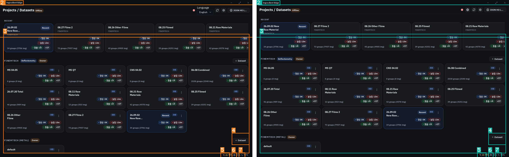
- 1제목줄 구분선(안쪽 선)
- 2계정 버튼
- 3Recent 배지 24.8 → 24px
- 4최근 데이터셋 카드: 제목 줄 높이 20px, 테두리를 여백에서 빼 좌우 여백이 1px 줄어 제목 줄바꿈이 바뀜
- 5다른 최근 카드
- 6다른 최근 카드
- 7다른 최근 카드
- 8다른 최근 카드
- 9클래스 칩 21.4 → 20px, 이미지 수 15.4 → 16px
9. 4px 그리드: Platform
같은 공용 컴포넌트(탭·메뉴·배지·카드·패널 구분선·줄 높이)를 쓰므로 Platform도 1~4px씩 움직였다. 색과 모양은 그대로이고, 상자가 조금 촘촘해진다.
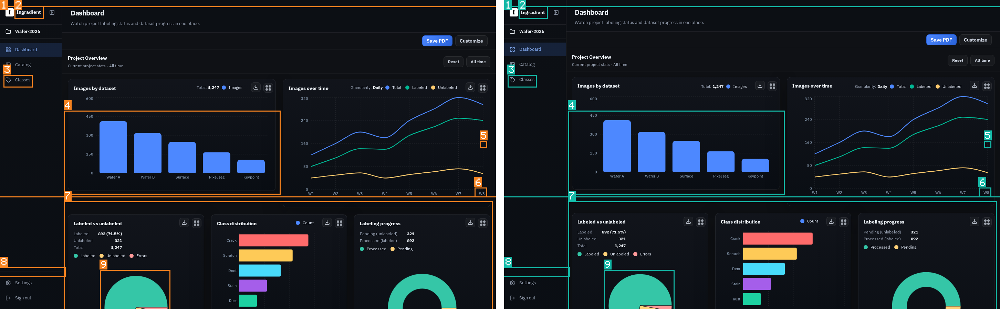
- 1사이드바 머리 구분선(안쪽 선)
- 2프로젝트 이름 줄 높이
- 3사이드바 항목
- 4차트 카드: 테두리를 여백에서 빼 2px 작아짐
- 5범례
- 6가로축 글자
- 7아래 카드 줄이 위로 당겨짐
- 8사이드바 아래 구분선
- 9원형 차트 위치
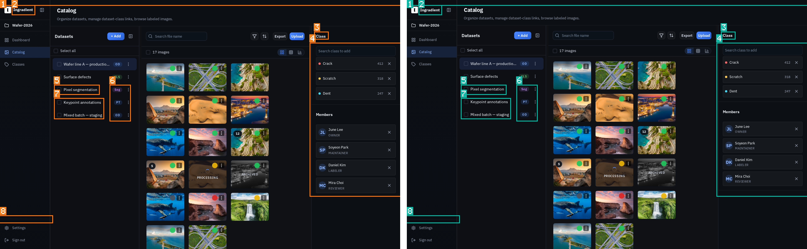
- 1사이드바 머리
- 2프로젝트 이름
- 3오른쪽 패널 머리
- 4클래스 행과 멤버 행: 테두리를 여백에서 빼고 줄 높이 px
- 5데이터셋 이름 줄 높이
- 6작업 유형 배지 24px
- 7데이터셋 목록
- 8사이드바 아래 구분선
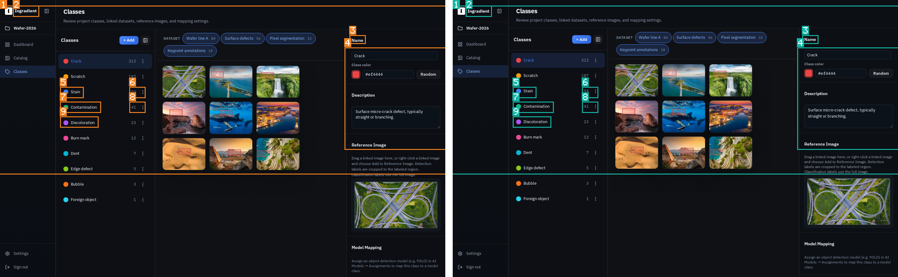
- 1사이드바 머리
- 2프로젝트 이름
- 3오른쪽 패널 머리
- 4이름·색·설명 칸(여러 줄 입력칸 76px)
- 5클래스 목록 줄 높이
- 6수 배지
- 7클래스 목록
- 8수 배지
- 9클래스 목록
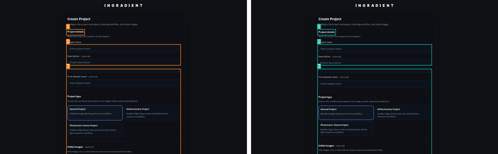
- 1절 제목 줄 높이
- 2입력칸 사이 간격
- 3설명 칸(여러 줄 76px)부터 아래 내용이 1~3px 이동
10. 스토리 테스트용 글자 숨김
Edge 0.0.6 페이지 스토리 35개(10개 파일)에 실제 앱에 없는 개발용 요소가 맨 글자로 그려져 있었다: 가짜 동작 결과("Mock …", "Simulation: …"), 테스트가 읽는 값("en", "None", "1 labels"), 장면 전환·가짜 완료 버튼. Platform에는 없었다. 이를 StoryStatus · StoryProbe · StoryControls(stories/support/story-probe.tsx)로 옮겨 1px로 숨겼다. DOM에는 남아 테스트와 화면 읽기 도구는 그대로 읽는다. 다시 보이면 테스트가 실패한다(harness-check.ts; 이전 빌드에서 3개를 잡고 새 빌드에서 0개임을 확인).
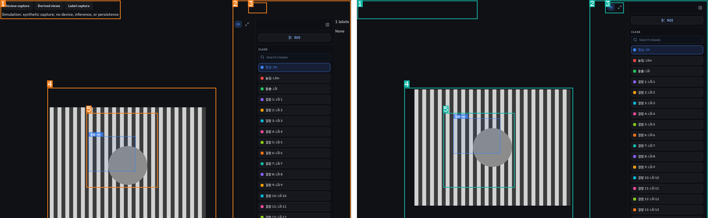
- 1장면 전환 버튼 3개와 "Simulation: …" 문장이 사라짐
- 2오른쪽 끝에 잘려 보이던 "1 labels / None"이 사라지고 오른쪽 패널이 화면 끝까지
- 3보기 버튼이 제자리로
- 4라벨링 영역이 위로 올라가 화면을 채움
- 5라벨 상자 위치(영역 이동)
11. 남은 것
- Setup의 모니터 밝기·각도·거리 모드, 줄무늬 굵기 Auto 찾기·AI 미세 조정(1절 1번).
- 커밋 4개(
0689e30~b6c1931) push, CI 시각 기준선 승인(1절 2번). - Platform 계정 설정의
min-width가 없는 토큰(--ig-layout-size-field-lg)을 가리켜 적용되지 않는다. Edge에서 같은 문제를 고치다 발견했다. 따로 고칠 것. - 모바일 전용 컴포넌트 2개의 테두리(좁은 화면 작업 보류 중).
- ingradient-edge PR #257(맥에서 Electron 28.0.0이 바로 꺼지던 문제 → 28.3.3). Windows CI는
main에도 있는better-sqlite3빌드 실패로 확인되지 않았다.
12. 검증 방법과 재현
- 커밋마다: tsc, lint, lint:style, style-literals, 단위(edge-pages 142), Edge Storybook(205, 4px·글자 검사 포함). 공용 컴포넌트를 바꾼 단계는 CI와 같은 순서 전체 검사(단위 502, Storybook 974, 빌드·소비자 검사)를 통과했다.
- 비교:
8993b05와b6c1931(Platform은59230cf, 둘 사이 Platform 화면 변경 없음)을/tmp작업 폴더에서 각각 빌드(6051, 6053),assets/2026-11-16-edge-real-app/compare.mjs로 1440×900 같은 상태를 찍어 바뀐 픽셀을 묶어 번호 박스. 새 화면은assets/2026-11-16-edge-real-app/capture-new.mjs. - 4px 측정:
assets/2026-11-02-edge-real-app/grid-audit.mjs(결과 JSON 같은 폴더). 실제 앱 캡처:assets/2026-11-02-edge-real-app/real/. /tmp빌드와 6051~6053 서버는 재부팅하면 사라진다. 이미지와 측정 결과는 위 폴더에 저장했다.